pacman::p_load(corrplot, ggstatsplot, tidyverse, plotly,knitr)05-2 Visual Correlation Analysis
1 Overview
A correlation coefficient measures the direction and strength of the linear relationship between two variables, with values ranging from −1 to 1. A value of 1 indicates a perfect positive relationship, −1 a perfect negative relationship, and 0 no linear relationship.
For multivariate data, pairwise correlations are typically summarised in a correlation matrix or shown using a scatterplot matrix.
Correlation matrices are used to (1) explore relationships among variables, (2) to support other analyses such as factor analysis and regression, and (3) as a diagnostic tool for detecting issues like multicollinearity.
For large datasets, corrgrams provide a compact visual summary by encoding the sign and magnitude of correlations and reordering variables so that similar ones appear together.
In this hands on exercise, we learn to visualise correlation matrices in R using pairs(), corrplot package, and an interactive Plotly approach.
2 Installing and Loading the Required Libraries
There are three packages that will be used in this exercise.
| Package | Description |
|---|---|
| tidyverse | A collection of R packages for data importing, cleaning, transformation, and visualisation (e.g., readr, dplyr, tidyr, ggplot2). |
| corrplot | A simple yet powerful tool for visualising correlation matrices, with automatic variable reordering and built in support for statistical significance |
| ggstatsplot | A gglot extension that creates graphics with statistical details. |
| plotly | Creates interactive and publication-ready graphs. |
The code below installs and loads the required packages into R environment.
3 Data Preparation
3.1 The Data
In this hands on exercise, the Wine Quality dataset from the UCI Machine Learning Repository is used. It contains 13 variables and 6,497 observations, with red and white wine data combined into a single CSV file named wine_quality.
3.2 Importing the Data
The code below uses read_csv() from readr package to import the dataset into R environment.
wine <- read_csv("data/wine_quality.csv")The preview table displays the first six records of the dataset. It contains 13 columns, where type is categorical variable, while the remaining columns are numeric variables of type double that describe wine quality, such as acidity, sulphur dioxide, alcohol, and overall quality.
kable(head(wine, n=6),format = "html")| fixed acidity | volatile acidity | citric acid | residual sugar | chlorides | free sulfur dioxide | total sulfur dioxide | density | pH | sulphates | alcohol | quality | type |
|---|---|---|---|---|---|---|---|---|---|---|---|---|
| 7.4 | 0.70 | 0.00 | 1.9 | 0.076 | 11 | 34 | 0.9978 | 3.51 | 0.56 | 9.4 | 5 | red |
| 7.8 | 0.88 | 0.00 | 2.6 | 0.098 | 25 | 67 | 0.9968 | 3.20 | 0.68 | 9.8 | 5 | red |
| 7.8 | 0.76 | 0.04 | 2.3 | 0.092 | 15 | 54 | 0.9970 | 3.26 | 0.65 | 9.8 | 5 | red |
| 11.2 | 0.28 | 0.56 | 1.9 | 0.075 | 17 | 60 | 0.9980 | 3.16 | 0.58 | 9.8 | 6 | red |
| 7.4 | 0.70 | 0.00 | 1.9 | 0.076 | 11 | 34 | 0.9978 | 3.51 | 0.56 | 9.4 | 5 | red |
| 7.4 | 0.66 | 0.00 | 1.8 | 0.075 | 13 | 40 | 0.9978 | 3.51 | 0.56 | 9.4 | 5 | red |
4 Building Correlation Matrix: pairs() method
There are several ways to create a scatterplot matrix in R. In this section, we use the pairs() function from base R graphics. pairs() creates a scatterplot matrix for exploring pairwise relationships among variables. Before proceeding, here is a quick review of the syntax of the pairs() function.
Basic usage:
pairs(x)where x is a numeric data frame or matrix.Formula interface:
pairs(~ x + y + z, data = df)uses variables specified in a formula, taken from a data frame.
4.1 Key arugments
labelssets variable names shown on the plotpanelcontrols how each scatterplot panel is drawnlower.panelandupper.panelallow different displays below and above the diagonaldiag.paneldefines what appears on the diagonal, such as histogramstext.panelcontrols text on the diagonalpch,col,cexadjust point style and sizemainadds a titlelogapplies logarithmic scalessubsetselects observationsna.actioncontrols handling of missing values
4.2 Building a basic correlation matrix
Figure below shows the scatter plot matrix of Wine Quality Data without the quality and type. It is a 11 by 11 matrix.
pairs(wine[,1:11])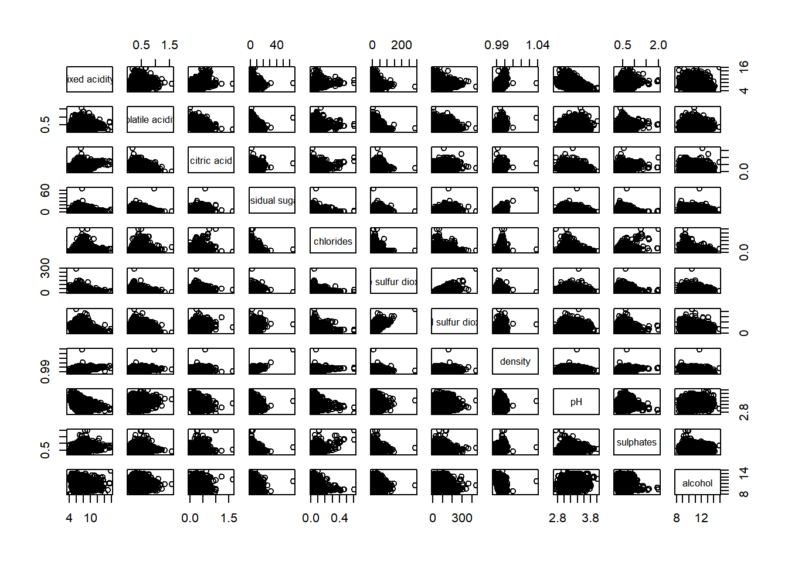
The pairs() function accepts a matrix or data frame as input. In this example, the default pairs() function is used to create a scatterplot matrix from columns 2 to 12 of the wine data frame, which include variables such as acidity, sugar, sulphur dioxide, density, pH, sulphates, and alcohol.
pairs(wine[,2:12])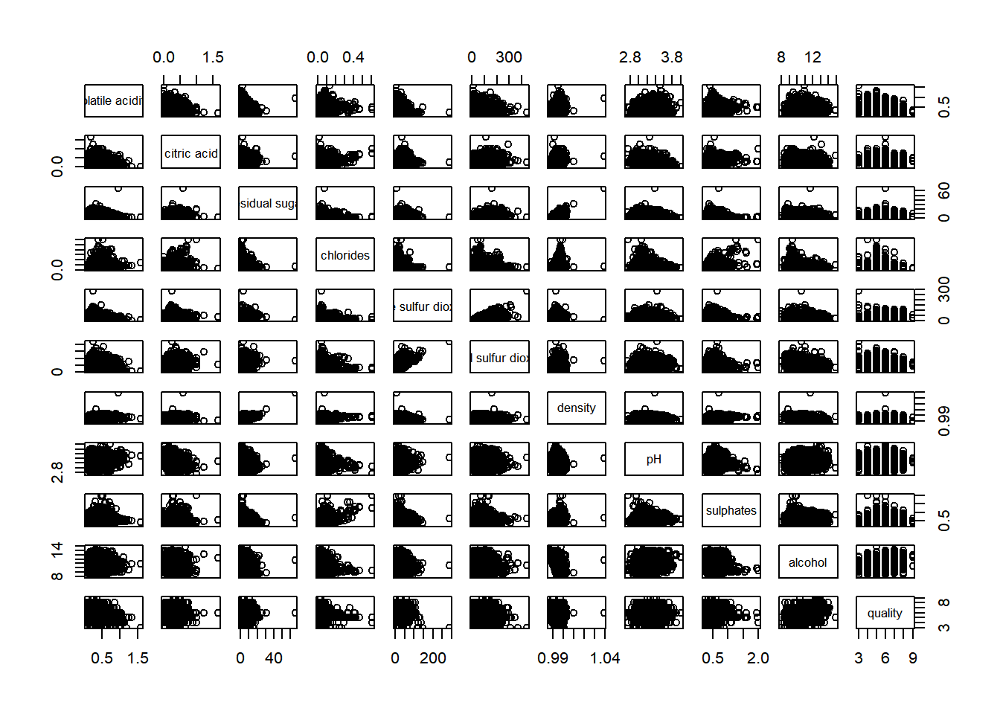
4.3 Drawing the lower corner
The pairs() function offers many customisation options. Since a correlation matrix is symmetric, it is common to display only one half. To show only the lower half of the scatterplot matrix, the upper.panel argument can be set to NULL.
pairs(wine[,2:12], upper.panel = NULL)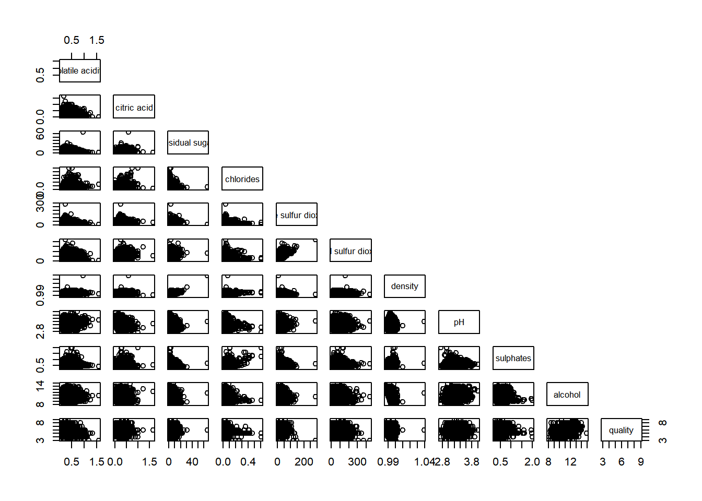
Similarly, we can display the upper half of the correlation matrix by using lower.panel = NULL.
pairs(wine[,2:12], lower.panel = NULL)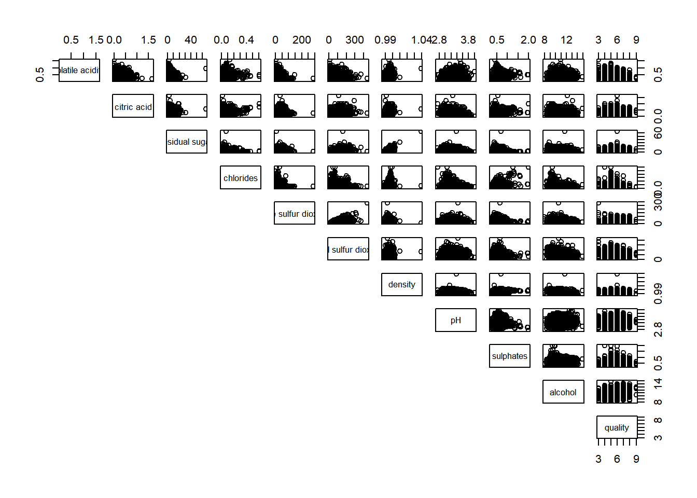
4.4 Including with correlation coefficients
Instead of scatterplots, the panel.cor function can be used to display correlation coefficients for each variable pair, with stronger correlations shown in larger text. The syntax is panel.cor(x, y, digits = 2, prefix = "", cex.cor). First we can simply run the code and explore the correlation matrix.
panel.cor <- function(x, y, digits = 2, prefix = "", cex.cor,...){
usr <- par("usr")
on.exit(par(usr))
par(usr = c(0, 1, 0 ,1))
r <- abs(cor(x, y, use = "complete.obs"))
txt <- format(c(r, 0.123456789), digits = digits)[1]
txt <- paste(prefix, txt, sep="")
if(missing(cex.cor)) cex.cor <- 0.8/strwidth(txt)
text(0.5, 0.5, txt, cex = cex.cor * (1 + r) /2)
}
pairs(wine[,2:12], upper.panel = panel.cor)
5 Visualising Correlation Matrix: ggcormat()
Correlation matrices become cluttered when datasets are large, making scatterplots hard to interpret. Corrgrams were introduced by D. J. Murdoch and E. D. Chow (1996) and Friendly, M (2002) to address this by visually summarising correlation strength and direction. Several R packages support corrgrams, including corrgram, ellipse, corrplot, and ggstatsplot. In this section, you will learn to visualise a correlation matrix using ggcorrmat() from the ggstatsplot package.
5.1 The basic plot
One advantage of using ggcorrmat() is its ability to produce a comprehensive yet professional statistical summary alongside the correlation matrix.
ggcorrmat(
data = wine,
cor.vars = 1:11)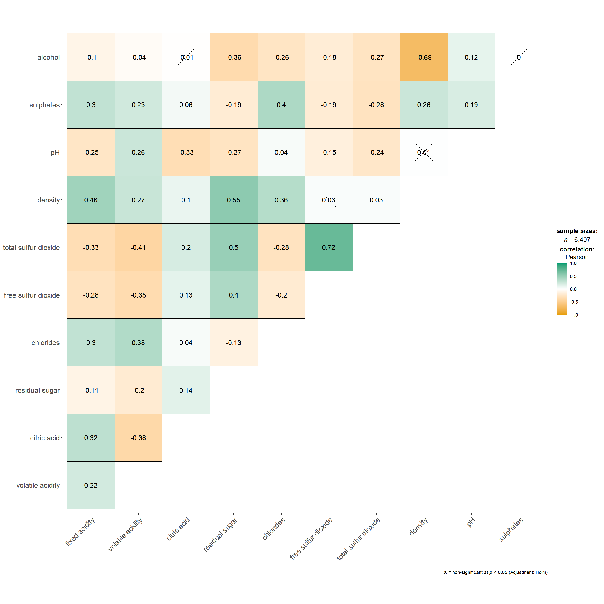
Next we add more customisations.
ggcorrmat(
data = wine,
cor.vars = 1:11,
# pass additional arguments to the underlying correlation plot
ggcorrplot.args = list(outline.color = "black", #black border around the cell
hc.order = TRUE, # reorder variables using hierarchical clustering
tl.cex = 10), #size of the variable labels
title = "Correlogram for wine dataset",
subtitle = "Four Pairs are no significant at p < 0.05"
)5.1.1 Things to learn from the code chunk above:
The
cor.varsargument specifies which variables are used to compute the correlation matrixwhile
ggcorrplot.argspasses additional aesthetic options toggcorrplot(). Certain arguments should be avoided in this list because they are handled internally, includingcorr,method,p.mat,sig.level,ggtheme,colors,lab,pch,legend.title, anddigits.
The sample sub-code chunk can be used to control specific component of the plot such as the font size of the x-axis, y-axis, and the statistical report.
ggplot.component = list(
theme(text=element_text(size=5),
axis.text.x = element_text(size = 8),
axis.text.y = element_text(size = 8)))ggcorrmat(
data = wine,
cor.vars = 1:11,
ggcorrplot.args = list(
outline.color = "black",
hc.order = TRUE,
tl.cex = 10
),
title = "Correlogram for wine dataset",
subtitle = "Four pairs are not significant at p < 0.05",
ggplot.component = list(
theme(
text = element_text(size = 8), #all texts
axis.text.x = element_text(size = 10),
axis.text.y = element_text(size = 10)))
)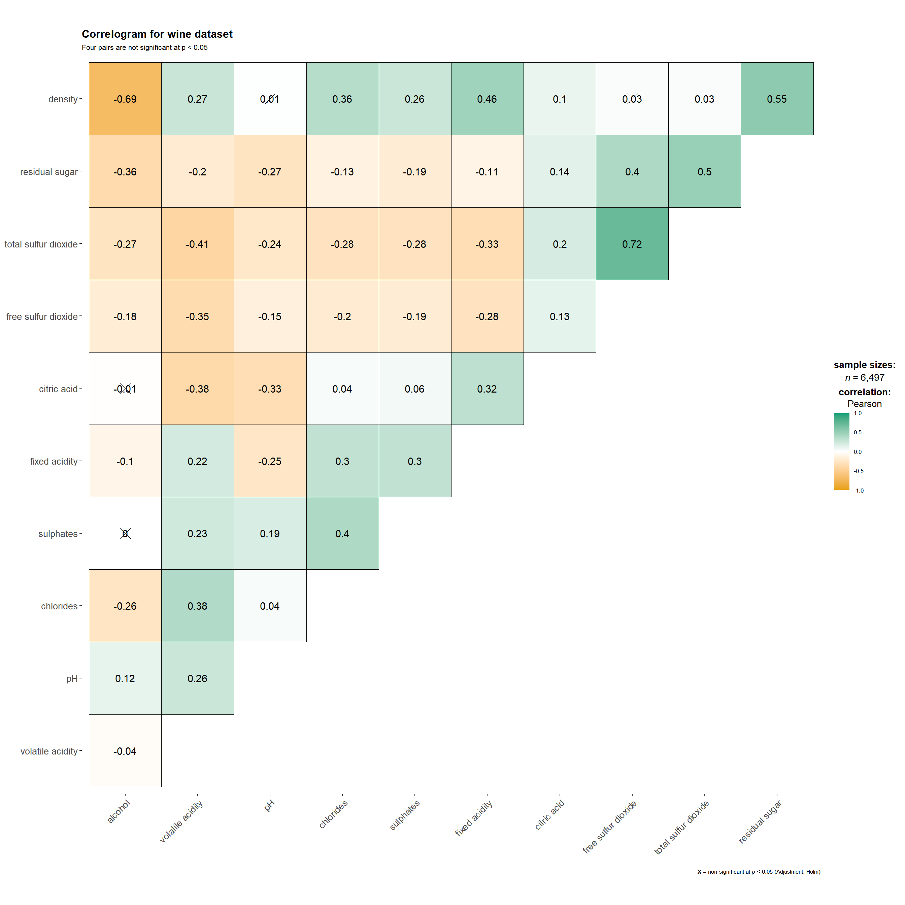
6 Building Multiple Plots
Since ggstatsplot is built on ggplot2, it supports faceting. However, faceting is not available in ggcorrmat() itself and must be done using grouped_ggcorrmat() from the ggstatsplot package. .
grouped_ggcorrmat(
data = wine,
cor.vars = 1:11,
grouping.var = type,
type = "robust",
p.adjust.method = "holm", #adjust p-values using Holm correction
plotgrid.args = list(ncol = 2), #arrange faceted plots in 2 columns
ggcorrplot.args = list(outline.color = "black",
hc.order = TRUE, # reorder variables via hierarchical clustering
tl.cex = 10),
annotation.args = list(
tag_levels = "a", # add panel tags (a, b, c, ...)
title = "Correlogram for wine dataset",
subtitle = "The measures are: alcohol, sulphates, fixed acidity, citric acid, chlorides, residual sugar, density, free sulfur dioxide and volatile acidity",
caption = "Dataset: UCI Machine Learning Repository"
)
)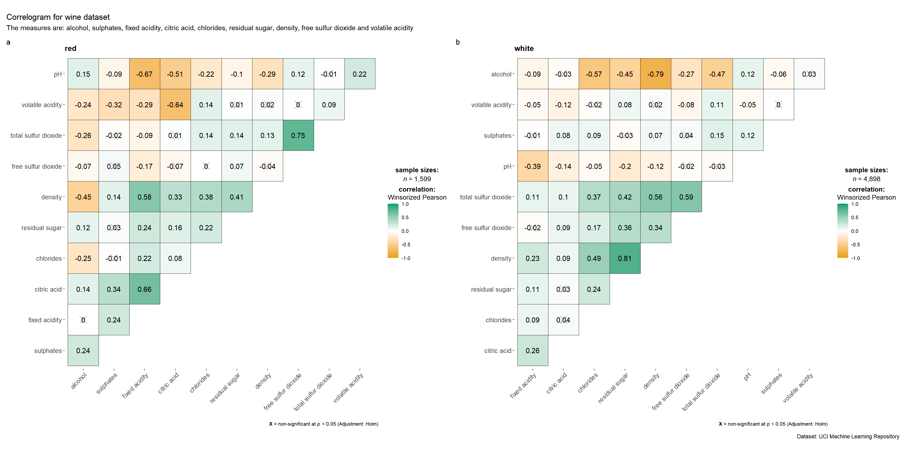
6.1 Key arguments
Faceted correlograms are created by specifying the
grouping.varargument.grouped_ggcorrmat()uses the patchwork package internally to arrange multiple plots. Theplotgrid.argsargument passes layout options topatchwork::wrap_plots, except forguides, which is handled separately.The
annotation.argsargument controls plot level annotations provided by patchwork.
7 Visualising Correlation Matrix: corrplot Package
In this hands on exercise, the focus is on corrplot, though you are encouraged to explore the other packages as well. An Introduction to corrplot provides a basic understanding of the package.
Here is a summary of the corrplot:
The corrplot package provides a flexible way to visualise a correlation matrix using
corrplot(corr, ...), wherecorris a correlation matrix computed bycor().It supports multiple visualisation methods via the
methodargument, such asmethod = "circle","square","ellipse","number","shade","color", and"pie".The appearance of the plot can be customised using arguments like
col(colour palette),tl.colandtl.cex(text label colour and size),cl.cex(legend size),addgrid.col(grid colour), andmar(margins).Variables can be reordered using the
orderargument, for exampleorder = "hclust","FPC","AOE", or"alphabet", withhclust.methodcontrolling the clustering method.The companion function
corrplot.mixed()allows different display styles above and below the diagonal usingupper =andlower =arguments, such asupper = "ellipse"andlower = "number".
7.1 Getting started with corrplot
Before using corrplot() to draw a corrgram, the correlation matrix must first be computed.The cor() function from base R is used to calculate the correlation matrix for the wine data frame.
wine.cor <- cor(wine[, 1:11])
corrplot(wine.cor)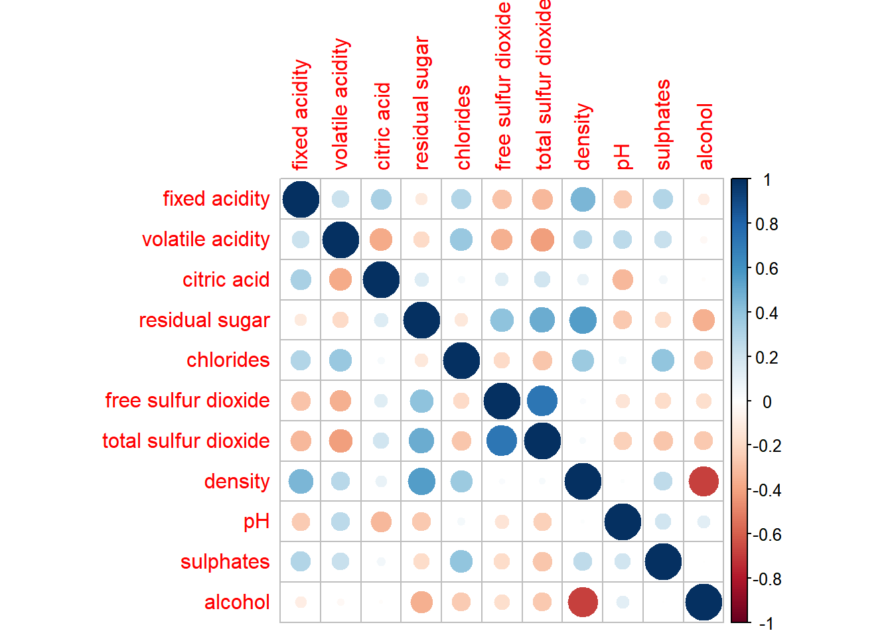
By default, corrplot() uses circles to display the corrgram and arranges the correlations in a symmetric matrix. A diverging blue–red colour scheme is applied, where blue indicates positive correlations and red indicates negative correlations. Colour intensity AKA saturation represents the strength of the relationship, with darker shades showing stronger correlations and lighter shades indicating weaker ones.
7.2 Working with visual geometrics
The corrplot package provides seven visual geometries, controlled by the method parameter, to encode correlation values: circle, square, ellipse, number, shade, color, and pie. The default method is circle, but this can be changed by specifying the method argument, as shown in the code below.
7.3 Working with layout
We experiment with layout options, such as type (full), tl.pos, tl.cex (1), tl.offset (0.4),cl.pos, cl.cex(0.8), and cl.offset (0.5), to further customise the appearance of the corrgram.
corrplot() supports three layout types: “full”, “upper”, and “lower”. The default is “full”, which displays the complete correlation matrix. This can be changed using the type argument in corrplot().The default corrgram layout can be further customised. For example, the diag argument can be used to hide the diagonal cells if diag = FALSE, while tl.col changes the axis text label colour to black, as shown in the code and figure below.
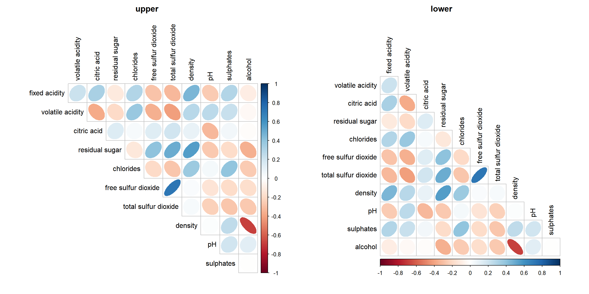
We also experiment with other layout options, such as tl.pos, tl.cex, tl.offset,cl.pos, cl.cex, and cl.offset, to further customise the appearance of the corrgram.
tl.pos controls position of variable labels: “lt” (left top), “ld”(lower diagonal), “td” (top diagonal), “n” (no labels)
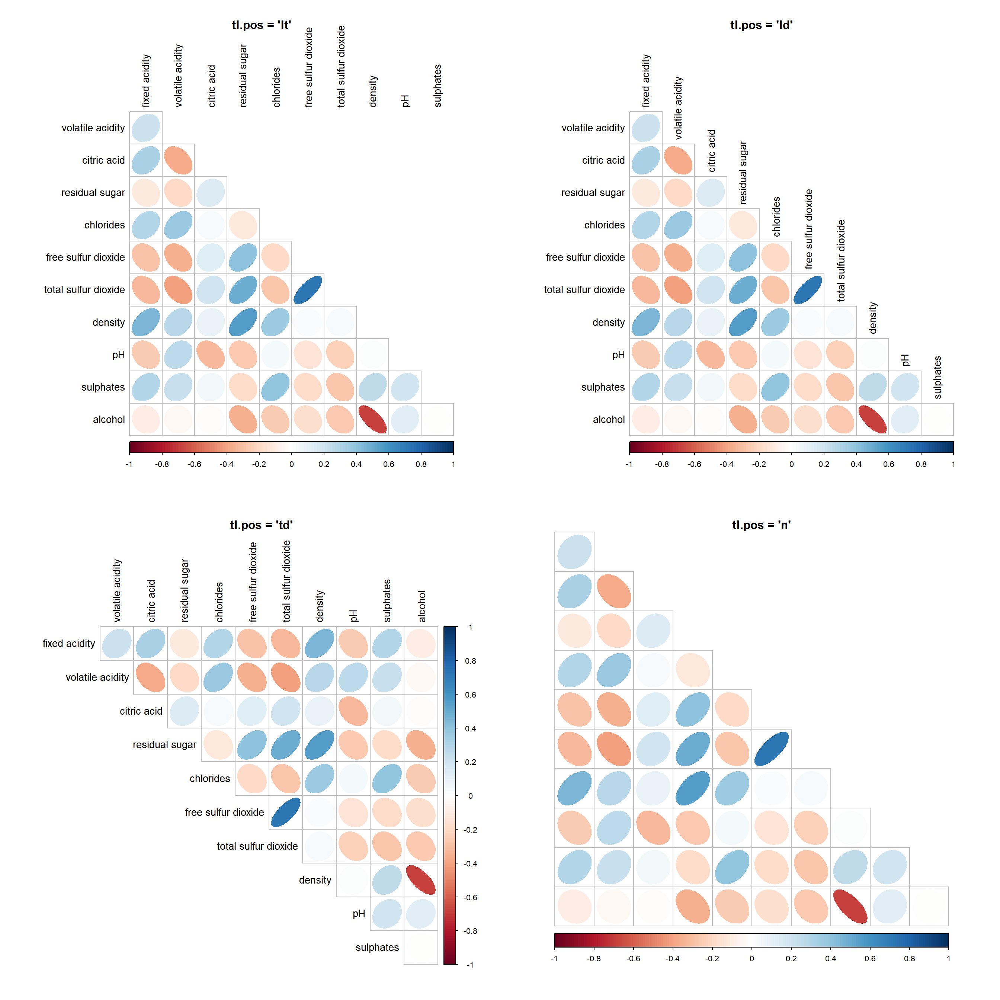
cex is short for character expansion.
tl.cex controls the size of the variable (text) labels in corrplot().
It is a scaling factor for text size.
tl.cex = 1default label size0< tl.cex < 1smaller labels
-tl.cex > 1 larger labels
tl.offset controls how far the variable labels are placed from the corrplot matrix.
Values greater than 1: move the labels further away from the plot.
Values less than 1: move the labels closer to the plot.
A value around 0.4: keeps the default spacing.
cl.pos controls the position of colour bar.
cl.cex controls the font size of the numerical labels on the scale bar.
cl.cex = 0.8default label size0< cl.cex < 0.8smaller labels
-cl.cex > 0.8 larger labels
cl.offset controls the position of the numerical labels on the scale bar.
Values greater than -1: move the labels further away from the plot.
Values less than 1: move the labels closer to the plot.
A value around 0.5: keeps the default spacing.
7.4 Combining Corrgram with the Significant Test
In statistical analysis, it is also important to identify which pairs of variables have statistically significant correlations. The figure below shows a corrgram combined with significance testing, revealing that not all correlation pairs are significant. For example, the correlation between total sulphur dioxide and free sulphur dioxide is statistically significant at the 0.1 level, whereas the correlation between total sulphur dioxide and citric acid is not.
We use the cor.mtest() function from corrplot package to compute p values and confidence intervals for each pairwise correlation.
Here, a 95% confidence level is used. If the p value is less than 0.05, there is statistically significant evidence to reject the null hypothesis that there is no pairwise correlation between the variables.
wine.sig = cor.mtest(wine.cor, conf.level= .95)Here we can obtain the significance and confidence interval for the correlation between fixed acidity and alcohol.If the confidence interval does not include 0, the correlation is statistically significant at the chosen confidence level.
The correlation between fixed acidity and alcohol is not statistically significant. There is no evidence of a linear relationship between these two variables based on the data.
wine.sig$p["fixed acidity", "alcohol"][1] 0.5486749wine.sig$lowCI["fixed acidity", "alcohol"][1] -0.7159033wine.sig$uppCI["fixed acidity", "alcohol"][1] 0.4516043The resulting p value matrix can be easily visualised by passing it to the corrplot() function using the p.mat argument, as shown in the code chunk below.
corrplot(wine.cor,
method = "number",
type = "lower",
diag = FALSE,
tl.col = "black",
tl.srt = 45, #tl
p.mat = wine.sig$p,
sig.level = .05)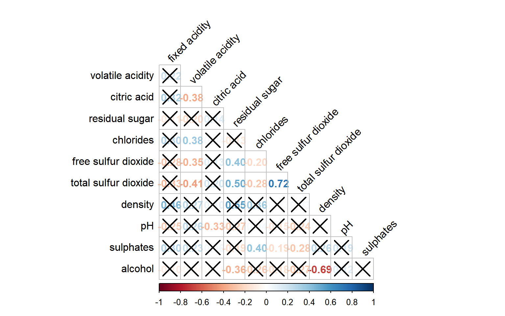
7.5 Reorder a corrgram
Matrix reordering is important for revealing hidden structures and patterns in a corrgram. By default, variables are shown in their original order, but this can be changed using the order argument in corrplot(). Supported methods include AOE (angular order of eigenvectors), FPC (first principal component), hclust (hierarchical clustering, with various linkage methods), and alphabet. Additional ordering algorithms are available via the seriation package.
Here, we use corrplot.mixed() with ellipses in the lower triangle and numbers in the upper triangle to improve readability.
corrplot.mixed(wine.cor,
lower = "ellipse",
upper = "number",
tl.pos = "lt",
diag = "l",
order="AOE",
tl.col = "black")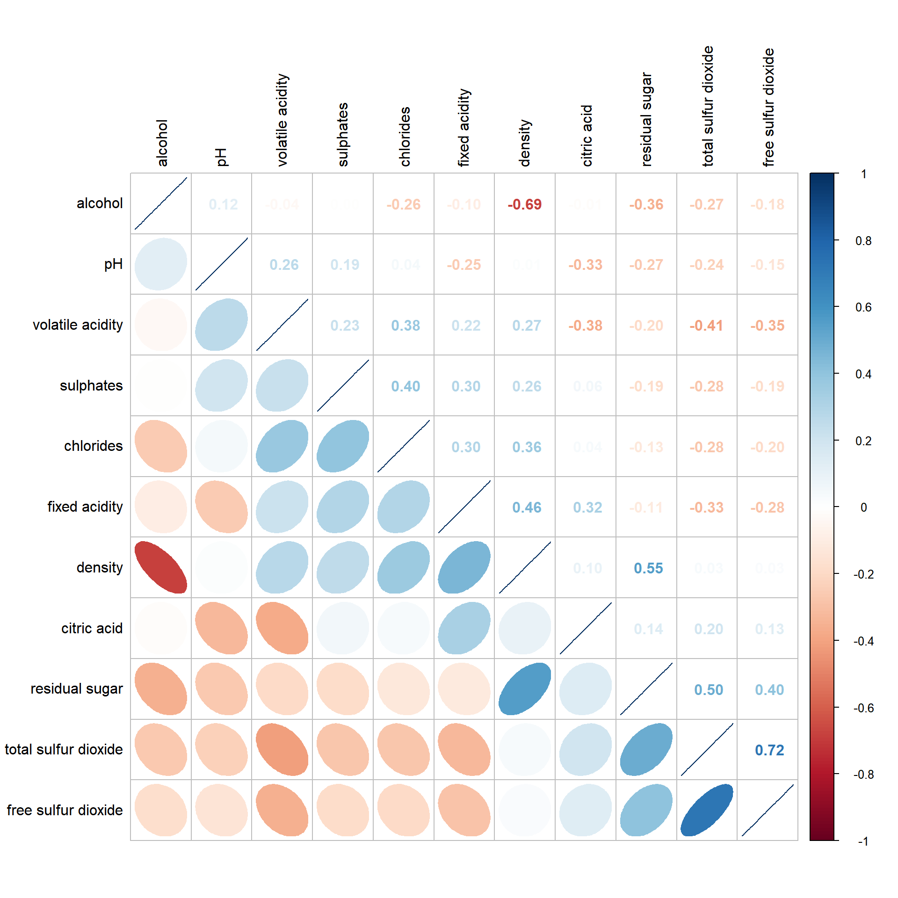
7.6 Reordering a correlation matrix using hclust
If using hclust, corrplot() can draw rectangles around the corrgram based on the results of hierarchical clustering. addrect = 3 draws rectangles around three clusters in the reordered matrix to highlight groups of strongly related variables.
corrplot(wine.cor,
method = "ellipse",
tl.pos = "lt",
tl.col = "black",
order="hclust",
hclust.method = "ward.D",
addrect = 3)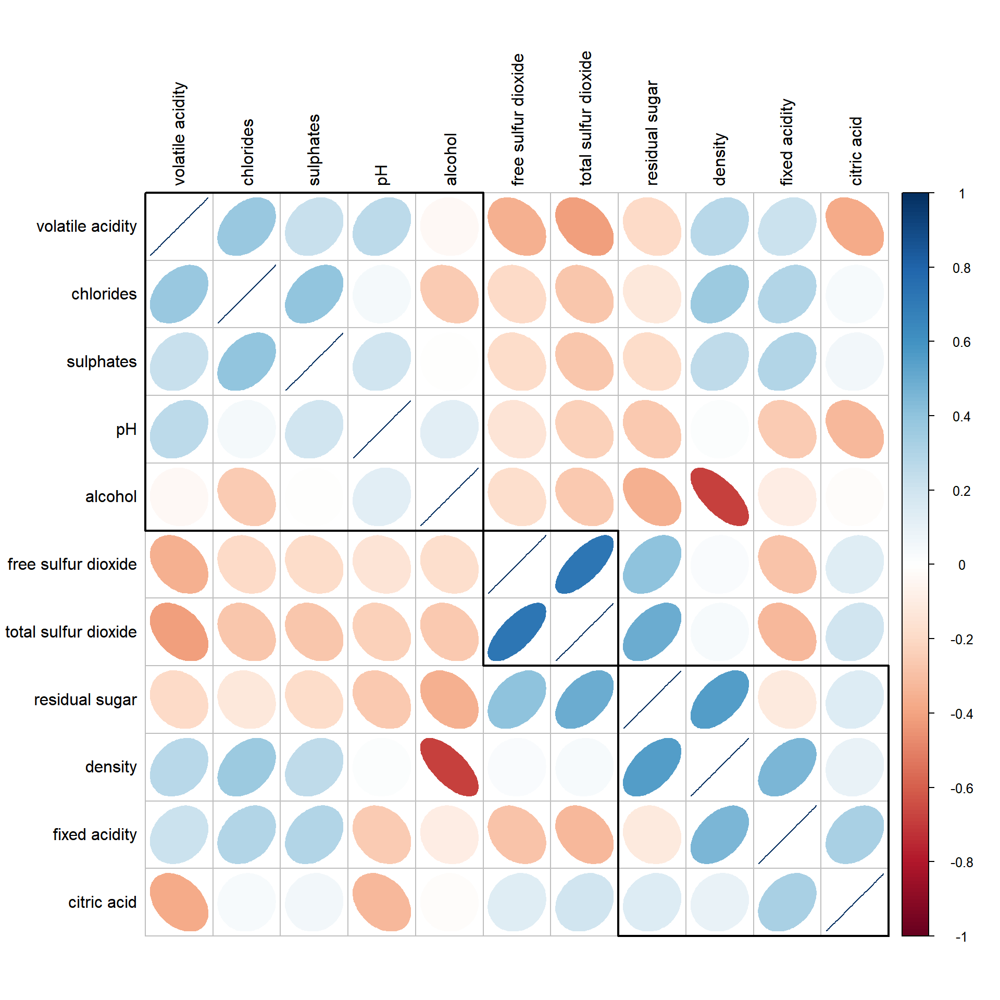
corrplot.mixed(
wine.cor,
lower = "ellipse",
upper = "number",
tl.pos = "lt",
order = "hclust",
hclust.method = "ward.D",
tl.col = "black" # addrect does not work with corrplot.mixed()
)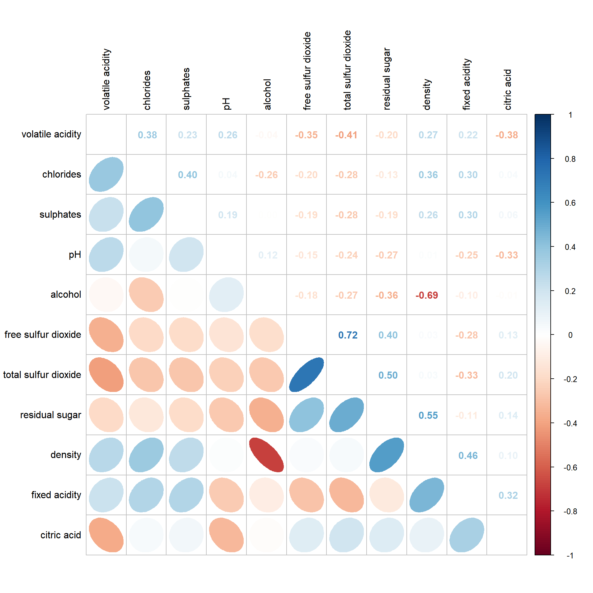
7.7 alphabet
corrplot.mixed(
wine.cor,
lower = "ellipse",
upper = "number",
tl.pos = "lt",
order = "alphabet",
tl.col = "black"
)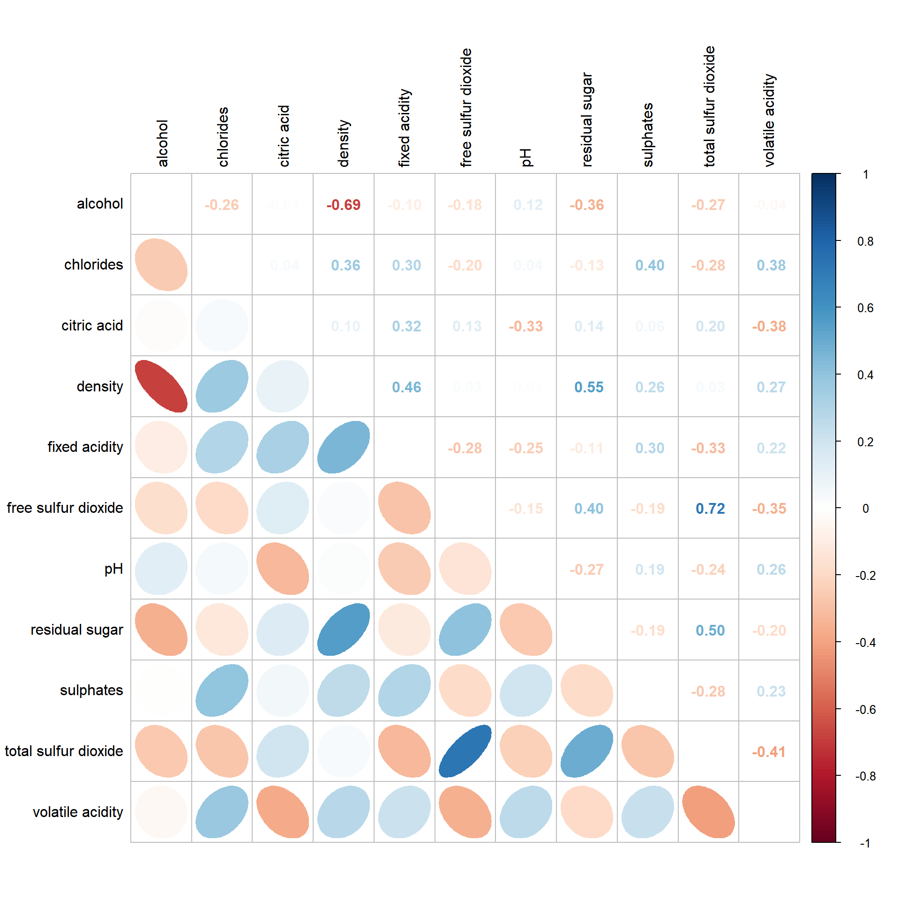
7.8 FPC order
corrplot.mixed(
wine.cor,
lower = "ellipse",
upper = "number",
tl.pos = "lt",
order = "FPC",
tl.col = "black"
)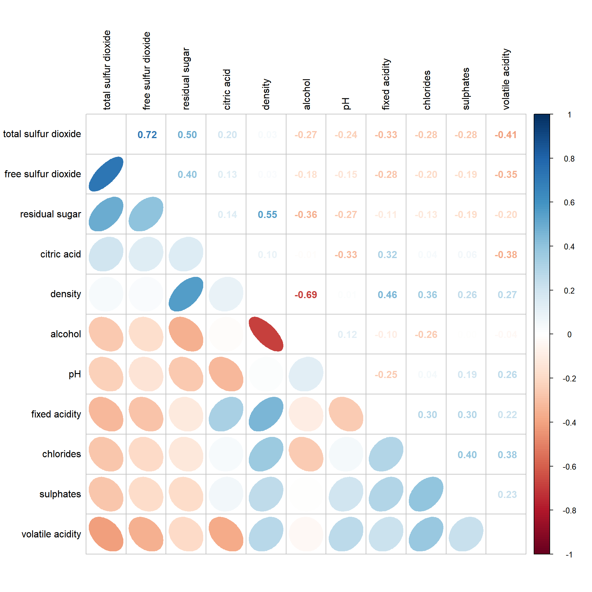
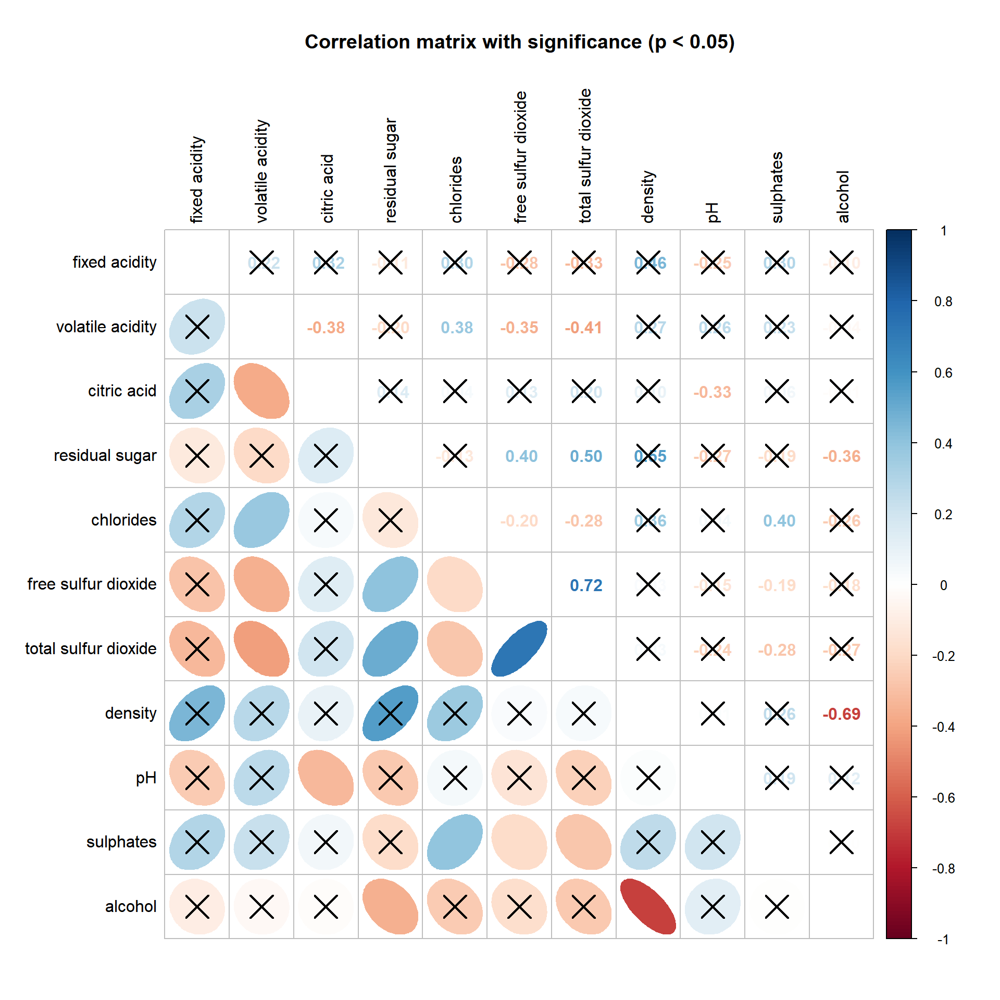
Caution
Different correlation plots may show different significance results because they use different p value adjustments.
corrplot() + cor.mtest() uses raw pairwise correlation tests (no multiple testing correction unless we add it manually).
ggcorrmat() from ggstatsplot applies multiple testing correction (Holm adjustment) by default (or as specified).
corrplot.mixed()andcorrplot()do not support grouping or faceting. To show statistical significance by wine type, we must split the data bytype, compute the correlation matrix and p values separately for each group, and then draw one corrplot per type with its own title. If we want grouped or faceted correlation plots in a single figure,grouped_ggcorrmat()from ggstatsplot is the more suitable tool.
8 Reference
Kam, Tin Seong (2026). 6 Visual Correlation Analysis R for Visual Analytics.
ggscatmat and ggpairs of GGally. But the package does NOT include statistical significance tests
corrgram calculates correlation of variables and displays the results graphically but without built-in hypothesis testing.